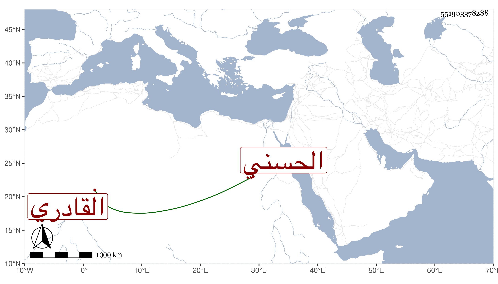

0902Sakhawi.DawLamic.ITO20230111-ara1.EIS1600.551903378288
Biography ID: 551903378288
791
موسى بن محمد بن علي بن حسين بن محمد الأكحل بن شرشيق الشرف ابن الشمس بن النور بن العز الحسني القادري والد المحمدين زين العابدين وشمس الدين وأخو حسن الماضيين وأبوهما . مات بالطاعون في سنة إحدى وأربعين بعد أبيه بيسير جدا ودفن بزاوية عدي بن مسافر بالقرب من باب القرافة رحمه الله .
